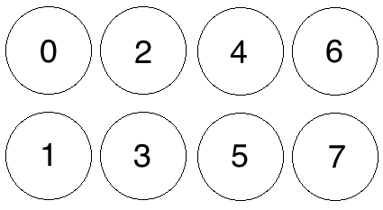
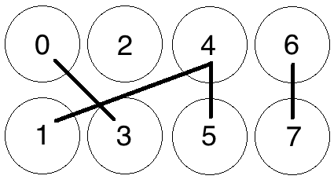
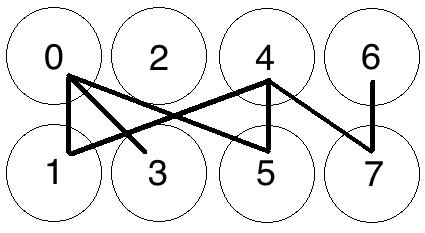
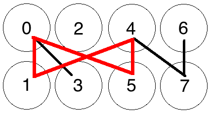
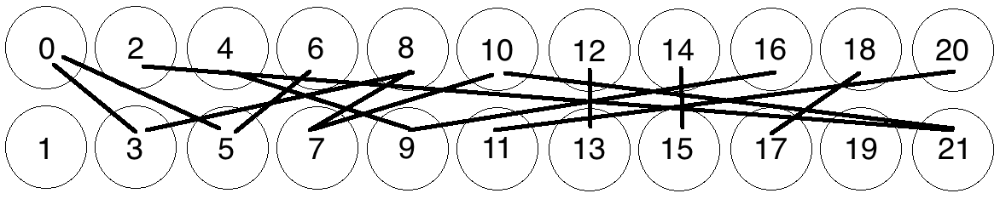

Cuckoo Cycle
Read this document in other languages: Korean.
This document is meant to outline, at a level suitable for someone without prior knowledge, the algorithms and processes currently involved in Grin's Proof-of-Work system. We'll start with a general overview of cycles in a graph and the Cuckoo Cycle algorithm which forms the basis of Grin's proof-of-work. We'll then move on to Grin-specific details, which will outline the other systems that combine with Cuckoo Cycle to form the entirety of mining in Grin.
Graphs and Cuckoo Cycle
Grin's basic Proof-of-Work algorithm is called Cuckoo Cycle, which is specifically designed to differ from Bitcoin's Hashcash that's purely computational. It is primarily a memory bound algorithm, which (at least in theory) means that solving performance is bound by memory bandwidth rather than raw computational speed. As such, eventual ASICs should run much cooler than hashing chips, and optimization will remain more digital than analog in nature (as they are for Bitcoin).
The Cuckoo Cycle POW is the work of John Tromp, and the most up-to-date documentation and implementations can be found in his github repository. The white paper is the best source of further technical details.
Cycles in a Graph
Cuckoo Cycle is an algorithm meant to detect cycles in a bipartite graph of M edges on N+N nodes In plain terms, a bipartite graph is one in which edges (i.e. lines connecting nodes) travel only between 2 separate groups of nodes. We can number the nodes so that one group consist of even numbered nodes, while the other group consists of odd numbered nodes. Each edge will then connect an even node with an odd node. The simple graph below denotes just such a graph, with 4 nodes on the 'even' side (top), 4 nodes on the odd side (bottom) and zero Edges (i.e. no lines connecting any nodes.)

A graph of 8 Nodes with Zero Edges
Let's throw a few Edges into the graph now, randomly:

8 Nodes with 4 Edges, no solution
We now have a randomly-generated graph with N+N=4+4 nodes and M=4 edges. Our basic Proof-of-Work is now concerned with finding 'cycles' of a certain length within this graph, or, put simply, a path of connected nodes starting and ending at the same node. So, if we were looking for a cycle of length 4, one cannot be detected in this graph.
Adjusting the number of Edges M relative to the number of Nodes N changes the probability that a cycle exists in the graph. For instance, if our POW problem were concerned with finding a cycle of length 4 in the graph, having M=4 means that all 4 edges would need to be randomly generated in a perfect cycle (from 0-5-4-1-0) in order for there to be a solution.
Let's add a few more edges, again at random:

8 Nodes with 7 Edges
Where we can find a cycle:

Cycle Found from 0-5-4-1-0
If you increase the number of edges relative to the number of nodes, you increase the probability that a solution exists. With a few more edges added to the graph above, a cycle of length 4 has appeared from 0-5-4-1-0, and the graph has a solution.
Thus, modifying the ratio M/N changes the number of expected occurrences of a cycle for a graph with randomly generated edges.
For a small graph such as the one above, determining whether a cycle of a certain length exists is trivial. But as the graphs get larger, detecting such cycles becomes more difficult. For instance, does this graph have a cycle of length 8, i.e. 8 connected nodes starting and ending on the same node?

Meat-space Cycle Detection exercise
The answer is left as an exercise to the reader, but the overall takeaways are:
- Detecting cycles in a graph becomes more difficult exercise as the size of a graph grows.
- The probability of a cycle of a given length in a graph increases as the average degree of M/N becomes larger.
Cuckoo Cycle
The basic Cuckoo Cycle algorithm is a specialized algorithm designed to solve exactly this problem for the case M=N. This document won't go into detail on the base algorithm, as it's outlined plainly enough in section 5 of the white paper. There are also several variants on the algorithm that make various speed/memory tradeoffs, again beyond the scope of this document. However, there are a few details following from the above that we need to keep in mind before going on to more technical aspects of Grin's proof-of-work.
- The 'random' edges in the graph demonstrated above are not actually random but are generated by putting edge indices (0..N-1) through a keyed hash function, SIPHASH. Each edge index is put through the SIPHASH function twice to create two edge endpoints, with the first input value being 2 * edge_index, and the second 2 * edge_index+1. The key for this function is based on a hash of a block header, outlined further below.
- The 'Proof' created by this algorithm is a set of edge indices that generate a cycle of length 42 (sorted by edge index) which can be trivially validated by other peers.
- Two main parameters, as explained above, are passed into the Cuckoo Cycle algorithm that affect the probability of a solution, and the time it takes to search the graph for a solution:
- The M/N ratio outlined above, which controls the average node degree. Cuckoo Cycle fixes M=N, which limits the number of cycles to a small number.
- The size of the graph itself
How these parameters interact in practice is looked at in more detail below.
Now, (hopefully) armed with a basic understanding of what the Cuckoo Cycle algorithm is intended to do, as well as the parameters that affect how difficult it is to find a solution, we move on to the other portions of Grin's POW system.
Mining in Grin
The Cuckoo Cycle outlined above forms the basis of Grin's mining process, however Grin uses two variations of Cuckoo Cycle in tandem with several other systems to create a Proof-of-Work.
- for GPUs: Cuckaroo on 2^29 edges
- Tweaked every 6 months to maintain ASIC resistance.
- 90% of rewards at launch, linearly decreasing to 0% in 2 years.
- Variant of Cuckoo that enforces so-called ``mean'' mining.
- Takes 5.5GB of memory (perhaps 4GB with slowdown).
- for ASICs: Cuckatoo on 2^31 or more edges
- Variant of Cuckoo that simplifies ASIC design.
- 10% of rewards at launch, linearly increasing to 100% in 2 years.
- Mean mineable in high memory GPUs.
- Takes 512 MB of SRAM memory for so-called ``lean'' mining.
- Smoothly transitions to 2^32 or more by July 2020, called Cuckatoo32+ (explained why here)
Additional Difficulty Control
In order to provide additional difficulty control in a manner that meets the needs of a network with constantly evolving hashpower availability, a further Hashcash-based difficulty check is applied to potential solution sets as follows:
If the Blake2b hash of a solution (a sorted array of 42 packed edge indices representing the edges in a 42-cycle) is less than an evolving difficulty target T, then the solution is considered valid. More precisely, the solution difficulty is calculated as the maximum target hash (2^256) divided by the solution hash, rounded to a 64-bit integer. If this integer is at least the evolving network difficulty, the POW is considered valid and the block is submitted to the chain for validation.
In other words, a potential proof, as well as containing a valid Cuckoo Cycle, also needs to exceed the network difficulty. This difficulty is derived from:
Evolving Network Difficulty
The difficulty target is intended to evolve according to the available network hashpower, with the goal of keeping the average block solution time within range of a target of exactly 60 seconds.
The difficulty calculation is based on a simple moving average computation, somewhat similar to ZCash. The reference difficulty is an average of the difficulty over a window of 60 blocks (nominally one hour). The corresponding time span is calculated by using the difference between the timestamps at the beginning and the end of the window. If the time span is higher or lower than a certain range, (adjusted with a dampening factor to allow for normal variation,) then the difficulty is raised or lowered to a value aiming for the target block solve time.
The Mining Loop
All of these systems are put together in the mining loop, which attempts to create valid Proofs-of-Work to create the latest block in the chain. The following is an outline of what the main mining loop does during a single iteration:
- Get the latest chain state and build a block on top of it, which includes a Block Header with new values particular to this mining attempt:
- The latest target difficulty as selected by the evolving network difficulty algorithm
- A set of transactions available for validation selected from the transaction pool
- A coinbase transaction (which we're hoping to give to ourselves)
- The current timestamp
- Roots of Merkle Mountain Ranges for headers, outputs, and kernels
- A randomly generated nonce to add further randomness to the header's hash
-
Then, a sub-loop runs for a set amount of time, where the following happens:
- The new block header is hashed to create a hash value
-
The cuckoo graph generator is initialized, which accepts as parameters:
- The hash of the potential block header, which is to be used as
- the key to a SIPHASH function that will generate pairs of locations for each element in a set of nonces 0..N in the graph.
- The size of the graph (chosen by the miner).
-
The Cuckoo Cycle detection algorithm tries to find a solution (i.e. a cycle of length 42) within the generated graph.
- If a cycle is found, a Blake2b hash of the proof is created, a solution difficulty computed, and compared to the current target difficulty, as outlined in Additional Difficulty Control above.
- If the solution difficulty is greater than or equal to the target difficulty, the block is sent to the transaction pool, propagated amongst peers for validation, and work begins on the next block.
- If the solution difficulty is less than the target difficulty, the proof is thrown out and the timed loop continues.
- If no solution is found, increment the nonce in the header by 1, and update the header's timestamp so the next iteration hashes a different value for seeding the next loop's graph generation step.
- If the loop times out with no solution found, start over again from the top, collecting new transactions and creating a new block altogether.
Pooling Capability
Contrary to some existing concerns about Cuckoo Cycle's poolability, the POW implementation in Grin as described above is perfectly suited to a mining pool. While it may be difficult to prove efforts to solve a single graph in isolation, the combination of factors within Grin's proof-of-work combine to enforce a notion called 'progress-freeness', which enables 'poolability' as well as a level of fairness among all miners.
Progress Freeness
Progress-freeness is central to the 'poolability' of a proof-of-work, and is simply based on the idea that a single solution attempt takes a relatively small amount of time. For instance, if a blockchain has a one minute block time and a slow miner needs 10 seconds per solution attempt, then it will have wasted on average 5 seconds per minute when its current attempt is aborted due to arrival of a new block. Faster miners will have less waste, giving an extra advantage on top of their higher attempt throughput. So in order to keep mining relatively progress-free, a POW that requires many solution attempts with each attempt taking a relatively small amount of time is desirable.
Following from this, Grin's progress-freeness is due to the fact that a solution to a Cuckoo with Grin's default parameters can typically be found in under a second on most GPUs. Members of a pool are thus able to prove they're working on a solution to a block by submitting valid Cuckoo solutions (or a small bundle of them) that simply fall under the current network target difficulty.